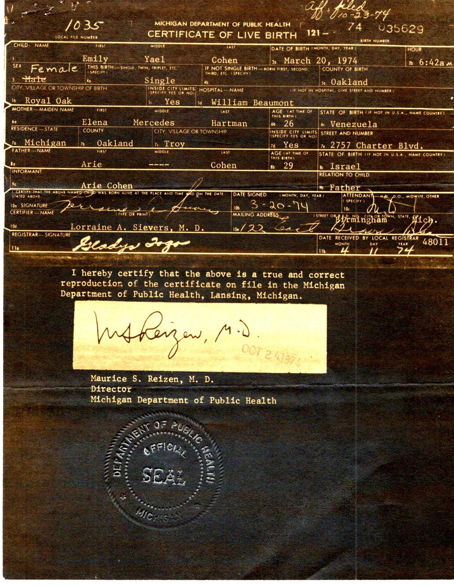
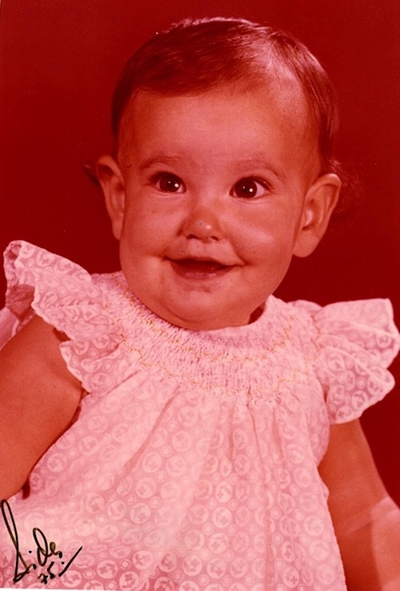
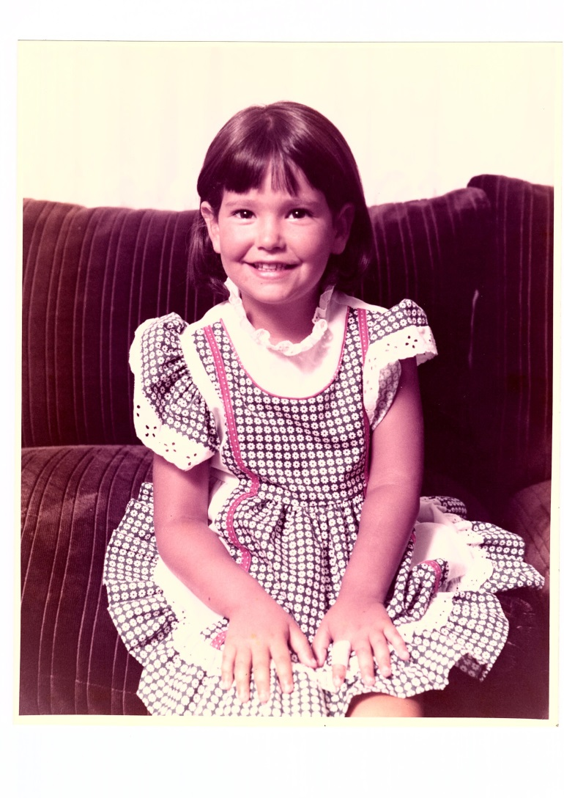
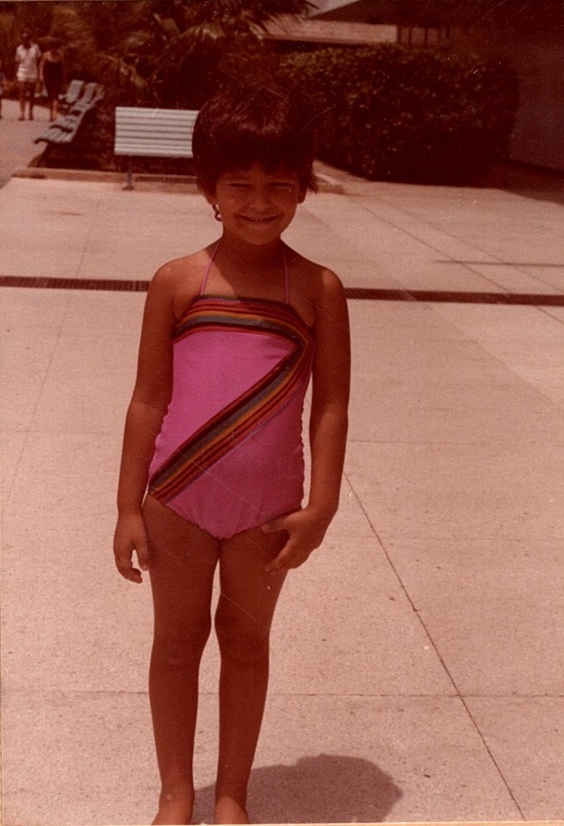
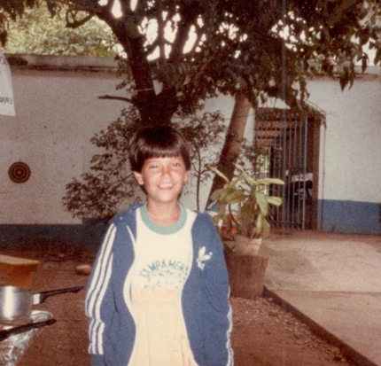
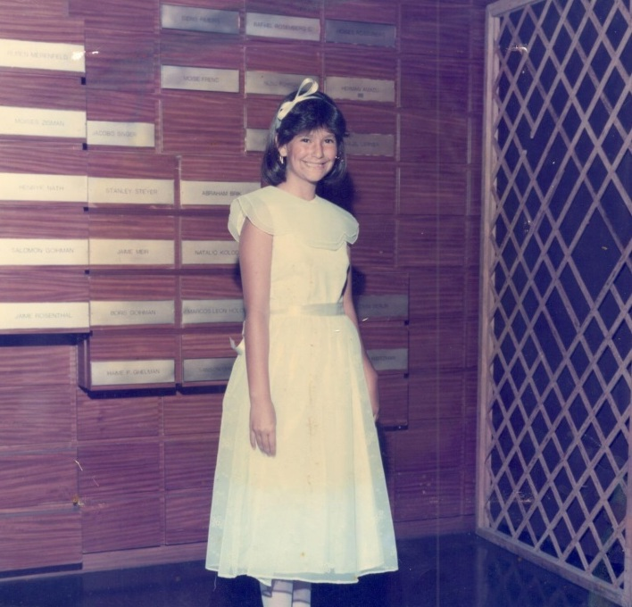
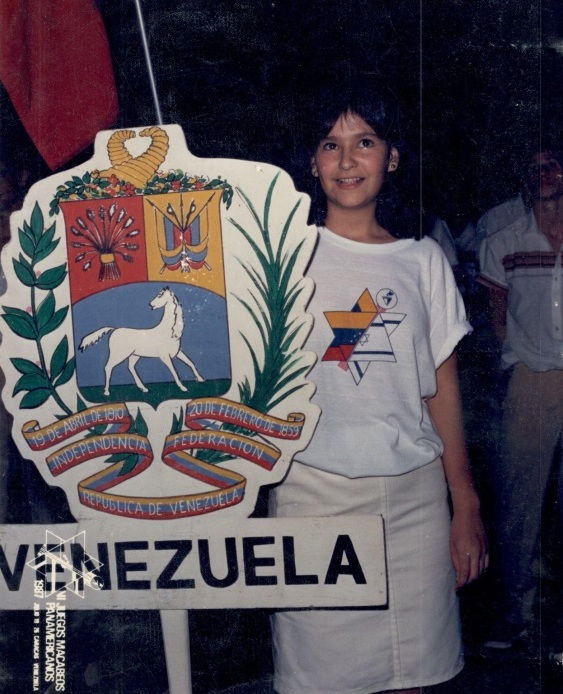
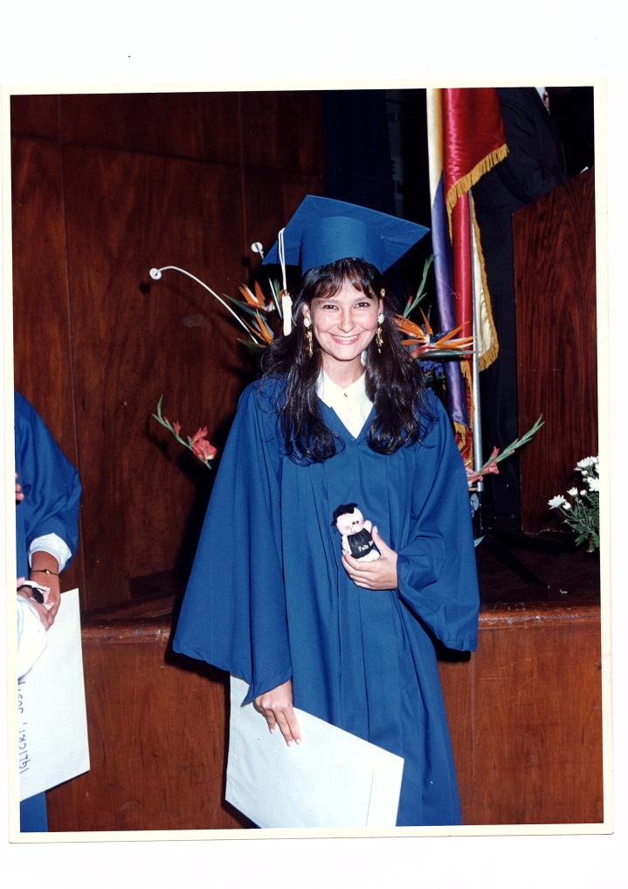
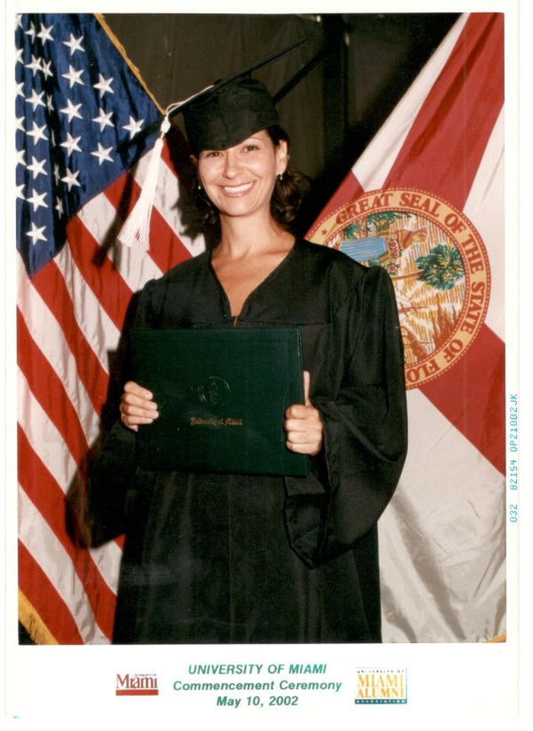
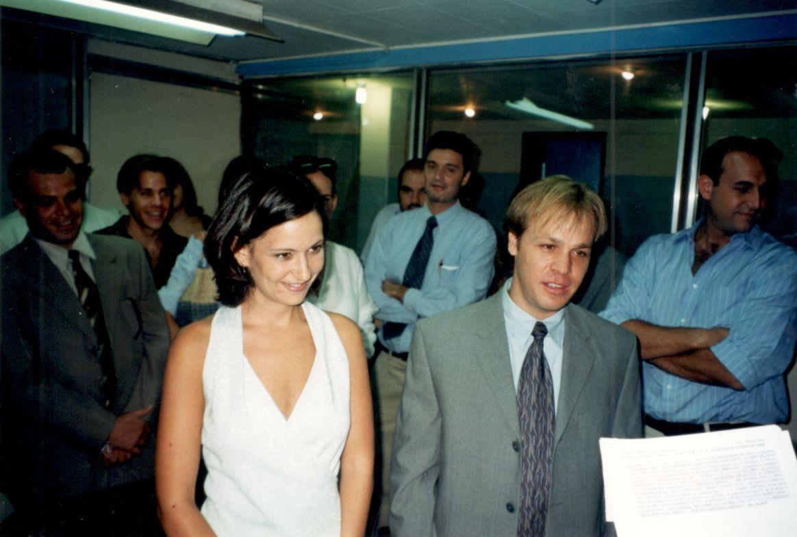

Mi mamá nació un 20 de marzo (primer día oficial de la primavera) de 1974 en Royal Oak, Michigan, en los Estados Unidos de América un día de nieve. Ella es la tercera hija de mis abuelos Arie Cohen y Elena Hartman. Ya para cuando nació, existían mi tío Rubén su hermano mayor, nacido el 3 de agosto de 1970 y mi tía Nina quien nació el 16 de julio de 1971. Mi Bisabuela Magda (mamá de mi abuela Elena) cuenta una anécdota que mi mamá no gusta contar, y a mí me parece graciosa. Dice que cuando nació mi madre, mi abuelo se fue a abrazar a su hijo Rubén y empezó a susurrar “mi único hijo varón”. La verdad que conociendo a mi abuelo Arie, dudo que haya dicho eso y ni él o mi abuela recuerdan esta anécdota.
Le pusieron Emily Yael. Mi abuela Elena tenía un tío al cual quería mucho (hermano de mi bisabuela Magda, mamá de mi abuela) que se llamaba Emil y falleció unos años antes, por lo que mi abuela quiso homenajearlo poniéndole a su próximo hijo (que pensaron que iba a ser varón) su nombre. Pero ¿cuál fue la sorpresa? Nació una niñita y la llamaron Emily igualmente en su memoria. El Yael lo eligió mi bisabuelo Reubén y no sabemos por qué, pero a mi mamá le encanta el nombre (Menos mal).
Mi mamá fue una bebé muy linda, en el hospital la llamaban de “one million dolar baby” (la niña de un millón de dólares) refiriéndose a su belleza, mi mamá sigue esperando que tal vez sea un presagio de lo que sucederá en un futuro (espera que sea más pronto que tarde).
Para el nacimiento de mi mamá mi abuela se trajo de Venezuela una ayuda, una joven llamada Teresa, la cual ayudó a cuidar a su tercera hija. Mi abuela cuenta que mi mamá era una bebé muy buena, se levantaba temprano y no molestaba, se quedaba en su cuna y hasta que no se levantara la gente no hacia ruido. Su abuelo Reubén, papá de su papá venía mucho a Michigan a visitarlos y como él se levantaba temprano para rezar, él se quedaba jugando con la pequeña Emily. Mi mamá ama este cuento, pues la hace sentir especial.
Quince meses después de su nacimiento nace el 27 de junio de 1975 su hermano menor Denny David. Vivió sus primeros 2 años en Estados Unidos, hasta que en Abril de 1976 sus padres deciden volver a Venezuela, para darles la oportunidad a sus hijos de poder crecer rodeados de familia, los cuales vivían todos en Venezuela.
Mi mamá no recuerda nada de su vida en Detroit, pero supone que fue muy feliz, pues en las fotos siempre sale muy sonriente!!!
De su vida en Venezuela, solo puede contar cosas maravillosas, ella ama este país, dice que es el mejor país del mundo y se siente afortunada de haber tenido la oportunidad de crecer en un lugar libre, en el que la gente siempre fue amable y educada, donde nunca tuvo miedo de decir quién era y mucho menos de serlo.
Vivienda
Desde que llegó a Venezuela vivió en la zona de la Florida en un edificio llamado La palmera. El edificio constaba de 13 apartamentos, uno por piso y era bastante grande. Tenía una zona de lavandería y cuarto de servicio, la cocina, sala y comedor inmensos, una sala de estar con un televisor y cuatro habitaciones. En uno dormían sus padres, compartiendo baño con una habitación en la que dormían mi mamá y su hermana mayor Nina, otro cuarto en el que dormían sus dos hermanos varones, que compartía baño con otra habitación que se utilizaba como biblioteca y donde estaba el piano que todos tocaban.
El edificio constaba con un jardín muy grande donde jugaban los hermanos kiking ball y trepaban los árboles que ahí habían. Tenían unos vecinos (no judíos) del piso 12 (ellos vivían en el 10) la chica que sería de la edad de Nina recuerda que se llamaba Verónica y la apreciaba mucho, pues la trataba mejor que su propia hermana. La mayoría de los que vivían en el edificio eran judíos, pero eran mayores que sus padres así que tenían hijos ya grandes.
La zona de la Florida mi mamá dice que era lo máximo, había de todo cerca e iban caminando a todas partes. Había un supermercado llamado San José a la vuelta de la esquina en la Av. Andrés Bello, donde hacían sus compras de alimento, en la calle donde se ubicaba el edificio, en la principal de las Palmas había muchas panaderías, en su propia calle estaba un quiosco, así que bajaban y compraban las chucherías. A mi mamá le encantaban las gomas de mascar, especialmente, el Dentine de canela y el Chiklets Adams de canela y el de Tuti fruti y ni hablar del Papa upa de frutas (se le hace la boca agua de solo recordarlo).
La zona contaba con 3 sinagogas cercanas: La Magüen David (de corte melillero) Beit Abraham y Beit Aron y una quedaba un poco más lejos que sería la de Maripérez, llamada Tiferet Israel, sinagoga principal sefardí de Caracas, con costumbre marroquí. Ella asistía a la de Maripérez, excepto en las fiestas que iban a Beit El en la zona de San Bernardino.
Vivían muchos judíos en la zona, de hecho pasaban varios autobuses del colegio por su calle, lo que era muy conveniente para ella y sus hermanos ya que si perdían el suyo (por pararse tarde) tenían la opción de agarrar el próximo que pasara. Pero mi mamá cuenta que los montaba el chofer de mala gana, ya que ellos pagaban la ruta de otro autobús y se suponía que no debían montarse en otro. Pero si se daba el caso de que perdiera todos los autobuses, ella caminaba hasta la estación del metro de Plaza Venezuela, se montaba en el metro hacia los Dos Caminos y agarraba la camionetica por puesto que pasaba en frente del club Hebraica donde se encontraba su colegio.
Vestimenta
Su vestimenta era como la de cualquier venezolano, no se distinguía por ser judía. Ella no vestía bajo ningún concepto siguiendo los lineamientos que dictan las costumbres judías, casi ningún judío lo hacía, ella sólo recuerda a la hijas del Rabino Luvabich Moshe Perman y las amigas de su hermana Nina que estudiaba en el Yavne (colegio religioso de la comunidad, sede del colegio Moral y Luces de San Bernardino) que eran como cinco y más nadie. De hecho mi mamá cuenta que le encantaba usar franelitas cortas, pues lo que le gustaba de su cuerpo era su barriga flaquita (quien la viera en estos momentos).
Educación
El preescolar lo pasó en uno pequeño llamado Blanca Nieves ubicado en la Campiña. Era una casita, la cual ella recuerda bien, dice que los salones estaban acondicionados con mesas de trabajo y un pizarrón, había un parquecito con un pasamano y lo recuerda, pues jugando en él cayó y se fracturó el codo. La llevaron a emergencia y le pusieron un yeso y lo que recuerda es que le mandaron a usar un cabestrillo la cual ella (por malcriadez) no quería utilizar.
Recuerda la prueba de admisión para primer grado, la cual no pasó (dice que le pusieron unas sumas y restas y se sintió confundida y le pidió a la maestra sólo que le dijera con cual se sumaba y con cual signo se restaba y ella no le quiso decir y lo hizo al revés). Mi Abuela pidió que por favor la admitieran, pues ella (mi mamá) lo que le faltaba era seguridad y ya y le hicieron caso pues entró en el colegio.
Mi madre al igual que la mayoría de los judíos asistía a una escuela hebrea, en el caso de mi mamá ella cursó todos sus estudios en el colegio Hebraica. Pero había otros tres colegios: El Moral y Luces de San Bernardino, que era solo sede de primaria, el Ramban, que quedaba en la Castellana y ella cree que estudiaban tanto judíos como no judíos y el Sinai un colegio religioso chiquito que se ubicaba en la Florida.
Ella recuerda que no le gustaba su colegio de primaria, no se sentía a gusto, no tenía amigos y de hecho ella recuerda que en primer grado primaria (tenía 6 años para cumplir 7) casi no asistió a clases ya que decía sentir un dolor fuerte de oído. También tiene un recuerdo extraño en que la maestra la llevó a la oficina de la coordinadora y ésta le dijo que cree que se siente mal porque siempre le mandan de comer pollo empanado (que cosas tan locas recuerda mi mamá).
Le hicieron un sinfín de exámenes médicos a mi madre, hasta la llevaron a Miami para verse con un especialista y al final los resultaron fueron: que su dolencia es emocional. (Ella no recuerda nada más pero se imagina la preocupación que debían sentir sus padres).
Segundo grado no fue mucho mejor, recuerda que su mamá le cortó el pelo cortito como varón, es más en la silla mientras le cortaban el cabello una señora se acercó y le dijo a su hijo “mira que bien se porta ese niñito” y es que para colmo mi mamá no tenía huecos para zarcillos (en Estados Unidos no solían hacer eso a las bebecitas) hasta que cumplió 11 años, así que de verdad parecía un varón. Al día siguiente, antes de subir al autobús, mi abuela le dijo a mi tío Rubén “cuida que nadie se burle de tu hermana” y mi mamá recuerda que éste apenas entró al autobús dijo “el que se meta con mi hermana se las va a ver conmigo” y mi mami entró con su cabeza abajo. Al llegar al colegio, seguro se burlaron de ella porque recuerda que la maestra la sacó del salón para poder hablar con los niños (¿para qué sería?).
Bueno, no tiene especiales recuerdos de su primaria, de hecho, varios años más tarde tuvo que volver a primaria por algo y dijo que no podía entrar ya que le producía una sensación triste estar ahí.
Sin embargo, bachillerato fue muy diferente. Cursó su primer año de bachillerato en el año 86-87 y lo recuerda de manera muy especial. Se sentía segura pues su hermano mayor cursaba 5to año y su hermana Nina estaba en 4to año, pensó que la protegerían y además en bachillerato se unían los colegios comunitarios y casi todos estudiaban ahí, así que representaba para mi mamá una nueva oportunidad para conocer gente nueva. Y así lo hizo. Le tocó en el primer año E y se hizo amiga de una niña llamada Sandy Zaidman y luego conoció a Mireya Katz, Vivian Pardo, Mery Carbunaru, Jenny Benaim y Karina Wigotzky con las que estaba en los recreo. Recuerda especialmente a Jacky Murcián, él fue el primerio en saludarla al llegar al salón (Y le pareció muy guapo).
El liceo en esa época era un poco diferente, empezando por el hecho que no estaba enrejado y en los recreos podían salir a comer al club, que no recuerda que tenía tantos concesionarios de comida.
La verdad tiene muchos recuerdos de su bachillerato: Mencionó las fiestas, las actividades del centro de estudiantes, las elecciones, los seminarios y muchas cosas más que hizo que su paso por el liceo se convirtiera en un recuerdo agradable.
Recuerda que académicamente le costaba mucho, no era de las mejores alumnas, le gustaba especialmente las clases de judaísmo (me pregunto si no lo dice a propósito). Al llegar a 4to año se fue por humanidades y fue la mejor decisión que ha tomado, le gustaba mucho su salón y las materias humanistas eran sus preferidas. El salón estaba conformado sólo por mujeres y un sólo varón: Jonathan Mandenblum.
4to año fue un año especial, empezó a salir los sábados en la noche, recuerda tener amigos mayores que la sacaban los fines de semana: Juan Zelicovitz y Andrés Goldfard, quienes eran madrijim de Macabi de sus amigas (ella no asistía a Macabi) Con ellos fue por primera vez a una discoteca y también recuerda especialmente un viaje a la Guaira con un grupo grande y fueron a los Caracas.
En cuarto también conoció al que sería su primer novio con el que estuvo por 5 años: Jacobo Benzaquen (Caco). Él era un chico que venía del Sinai y entró en cuarto año a liceo Moral y Luces. Cursaba el mismo año que mi mamá.
La gira educativa que se realiza ese año en la vacaciones, en la que viaja toda la promoción a Israel no le gustó nada, todo lo que duró el viaje se quiso devolver. Todavía existe gira y siempre mi mamá me amenaza, diciendo que no me va a mandar, pues no vale la pena y es una plata mal gastada.
Se graduó del liceo en julio de 1991 y dice que ese día fue lo máximo, la fiesta de graduación fue en el salón de fiesta del Regency, duró toda la noche y a la madrugada se fueron a desayunar a una arepera llamada La Sifrina.
Al día siguiente viajó a los Estados Unidos donde permaneció hasta diciembre en Carolina del Norte, estudiando inglés en el instituto Interlink que quedaba en Guilford College en Greensboro.
En Enero del año 2002 se fue a Israel para participar en el programa “Sheli” que era un programa para bachilleres latinoamericanos, que querían estudiar en la Universidad de Jerusalén y era como una preparación para ello.
Volvió en Julio a Caracas y en Octubre comenzó sus estudios universitarios en la Universidad Católica Andrés Bello en Educación mención Ciencias Sociales. Al mismo tiempo participó en el programa “Orot” Seminario de preparación para Morim dirigido por el Keren Jinuj Caracas. Las clases en la Universidad eran de 2 a 6 de la tarde y los lunes y martes iba a este curso que se llevaba a cabo en la sede del Bet am en San Bernardino de 8 a 10 de la noche. Ella recuerda que iba acompañada de su querido amigo Gabriel Pines.
Finalizado el primer año de universidad, decidió retirarse, pues no se sentía preparada para estudiar en la universidad, sin embargo, continuó con el curso de “Orot” y de hecho ese año la llamaron para hacer una suplencia de cuatro meses de Historia Hebrea en segundo año de bachillerato y así a la edad de 19 años tuvo su primera experiencia como Morá y le encantó.
Terminado el programa de Orot fue seleccionada con otras 3 jóvenes para viajar a Israel y cursar un año en el Majón Greenberg, instituto de morím de la diáspora. Ella lo describe como el mejor año de su vida (siempre me siento ofendida cuando dice eso) Le encantaron las clases, estudió: Torah, tanaj, Literatura Israelí, Literatura de niños, gramática de hebreo, sociedad Israelí, filosofía hebrea, Sionismo y geografía (en la que la llevaban a paseos para estudiar de primera fuente todos los fenómenos que estudiaban en la teoría). Fue un sueño hecho realidad, todas las materias que amaba, las estaba estudiando y todo fue en hebreo, ella aprendió a hablar perfecto el idioma en ese año.
Al año se regresó y continuó con sus estudios universitarios y trabajó en el colegio como morá de Historia hebrea. Trabajaba en la mañana y las clases de la Universidad eran de 6 a 10 de la noche.
Estando cursando el cuarto año de universidad, decide trasladarse a los Estados Unidos de América, y pide revalida en la Universidad de Miami, donde le revalidaron toda la carrera y logra terminar antes del tiempo determinado. Se gradúa en mayo del 2002 como Bachiller en Artes, como historiadora especializada en estudios judaicos.
Vuelve a Venezuela y desde entonces trabaja como Morá en el liceo Moral y Luces Herzl Bialik.
Ella dice que no puede dejar de mencionar en este espacio de educación su “post grado” que no es post grado real, pero así lo siente ella. Dice que La Midrasha le Morot que se cursa en el centro Beit Shmuel de Caracas, le enseñó más de lo que jamás había estudiado en su vida. Allí aprendió sobre ella, quién es y quien debería ser como judía que pertenece a un pueblo muy especial, que ha sido elegido por D-os para ser ejemplo mundial.
Religión y costumbres
Ella creció en el seno de una familia tradicionalista. No guardaban el Kashrut, no seguían las normas del Shabat, mas sin embargo, se reunían todos los viernes con la familia de mi abuelo. Se turnaban las cenas, un viernes en casa de mi bisabuela paterna, otro viernes en casa de mi abuela Elena y el siguiente en casa de mi tía Mérchele, esposa de mi tío Moisés (hermano de mi Abuelo Arie). Las fiestas también las celebraban pero no a nivel religioso, se centraba en la reunión familiar. También iban mucho a casa de su abuela Magda. Especialmente los domingos y una que otra fiesta judía.
Cuenta que los viernes los venía a buscar su Abuelo Reubén y los llevaba a la sinagoga Maripérez, a la cual le encantaba ir, pues se llenaba de jóvenes. En las festividades asistían a la sinagoga Bet El de San Bernardino. Ella me cuenta que en Kipur no montaban carro, ni veían televisión y tampoco llamaban por teléfono. Por esa razón se mudaban a casa de mi bis abuela Magda, pues vivía en San Bernardino cerca de la sinagoga antes mencionada.
Mi mamá no iba a ningún grupo juvenil, pero si participó en la escuela de madrijim, en 4to y 5to año de bachillerato. Le encantó esta experiencia y dice que aprendió mucho.
Ahora todos conocemos a mi madre hoy en día ¿Qué le pasó?
Anexo pondré un discurso que mi mamá dio en el día de la Hilúla de Rajel Imenu (Aniversario de muerte de la matriarca Rajel) en la que la invitaron para dar unas palabras sobre su proceso de Teshubá. Quien quiera saber cómo volvió en Teshuba, vale la pena leerlo.
Cultura
En casa de mi mamá se hablaba en castellano, mis abuelos hablaban inglés a la perfección, pero nunca hablaron con ellos en ese idioma y mi abuelo que hablaba hebreo tampoco habló con ellos en ese idioma.
La casa de mi mamá era una casa culta, todos leían mucho, no solo periódico, también muchos libros de literatura e historia, ella recuerda siempre la biblioteca de la casa llena de libros, enciclopedias, atlas y por supuesto muchos libros de medicina. El juego favorito que jugaban en familia era Trivialidades, un juego de conocimientos, que se divide por tema y el que más respondía, es decir, el que más sabía ganaba. Mi mamá nunca ganaba, ella se sentía la más tonta de la familia.
En la familia de mi mamá tanto su papá como su mamá tenían carro y hasta incluso hubo una época en que tuvieron un chofer ya que a mi abuela la habían operado y no podía llevarlos a sus actividades.
Los lugares de diversión, eran el cine, por supuesto estaba Puerto Azul donde pasaban sus vacaciones, tanto de diciembre como de término de clases, ahí pasaban largas temporadas. Ella recuerda que su papá los llevaba también a parque de diversiones, como el Ítalo Americano y Bimbolandia, parques que todavía existen y que mis padres nos han llevado a mí y a mis hermanos.
En casa de mi mamá se comía las comidas típicas de Venezuela y en Shabat y las festividades judías se comían las comidas típicas bujáris y las húngaras también.
Mi mamá celebraba el año nuevo gregoriano, la Navidad no, en Carnaval se disfrazaba y no celebraban la Semana Santa.
No recuerda jamás haber vivido algún incidente antisemita.
Ocupaciones
Su papá, es decir mi abuelo Arie es Ginecólogo obstetra, trabajaba muy duro, durante la semana no lo veían pues llegaba tarde a casa y era muy normal que saliera en las madrugadas para atender partos.
Trabajaba en dos clínicas la Policlínica Metropolitana y la Clínica Caracas. Mi mamá dice, que lamentablemente no tiene muchos recuerdos de su papá, pues éste trabajaba siempre, incluso no iba a Puerto Azul con la familia de lo ocupado que siempre estaba.
Pero para compensar la situación, mi abuela Elena no trabajaba y se dedicaba al cien por ciento a sus hijos. Fue una madre muy presente en la vida de sus cuatro hijos. Es una madre muy cariñosa y abuela también.
La situación económica fue buena, nunca les faltó nada, pero tampoco tenían excesos, ya que no era la filosofía de mis abuelos. De hecho nunca llevaban a sus hijos de viaje.
Mi mamá cuenta que casi no tuvo relaciones con no judíos hasta que entró a la universidad y siempre la relación fue cordial y respetuosa.
Sionismo
Mi mamá al igual que yo crecimos en una comunidad sionista, en la que se celebraban las fechas especiales del Estado de Israel. Pero no se escuchaba de gente que migrara a esa Tierra. En su casa en especial no era sionistas, a pesar que su papá es israelí.
Amor
Mi Mamá me cuenta que tuvo varios novios, pero esperó y esperó hasta conseguir al mejor. Mi Papá.
En realidad ellos se conocían desde que mi mamá estaba en bachillerato, ya que mi papá era amigo de mi tío Rubén. De hecho mi mamá salía mucho con él, inclusive teniendo novios ella salía los viernes en la noche a Paladium (una discoteca en el CCCT) con él y los sábados iba por el día a Puerto Azul con mi padre.
Pero no fue hasta que vivía en Estados Unidos, en el año 2001 que en una visita a Venezuela, salió con mi papá y decidieron probar estar juntos. Y así fue como a pesar de la distancia estuvieron en contacto, mi papá la iba a visitar y ella venía a Venezuela y así se fueron enamorando hasta que decidieron que ya no querían estar separados más nunca y mi mamá se volvió a Venezuela y tras terminar sus estudios en Miami en el 2002 se casaron para tener a sus otros amores mis hermanos y especialmente YO.
Discurso de la Hilula de Rajel Imenu
Shabat Shalom!
Se me pidió que hoy les contara un poco de mí y de mi proceso de teshuvá.
Comencemos desde el principio. Yo siempre me he considerado una persona muy judía. Para mí el ser judía era el centro de mí ser, era mi identidad. Recuerdo cuando tenía 16 años y estábamos en una clase con el Moré Gustavo Azar y nos preguntó ¿qué es lo que nos hace ser quiénes somos? ¿Cuál aspecto de nosotros, si nos quitaran, dejaríamos de ser lo que somos? Y yo sin pensarlo mucho dije el ser judía. Nadie estuvo de acuerdo conmigo, todos coincidían que lo que nos define es nuestra personalidad. La verdad que en aquel momento no entendí esta afirmación y si les soy sincera sigo sin entenderlo. Para mi ser hija de Abraham Abinu, haber sido dirigida por Moshe Rabenu, me hacían lo que soy y este conocimiento dirigía mi vida.
No se cómo explicarles que el hecho de no cumplir con muchas mitzvot, no afectaban para nada mi sentimiento, por eso estoy convencida que no es necesario cumplir para sentir. Mi ser y mis acciones como persona me definían como una buena hija de Hashem. Yo sentía que D-os debía estar muy orgulloso de mi por tenerlo siempre presente y ser buena con las personas me hacía llevar su estandarte. Y estoy segura que Hashem estaba contento y agradecido, ya que me lo había dado todo: Mi familia, mi esposo, mis hijos. Realmente estaba feliz, no me hacía falta nada.
¿Qué cambio?
No sé si saben que desde hace muchos años me he dedicado a la educación, he sido mora en el liceo Moral y Luces Herzl Bialik. Hace algún tiempo compartí salón con una morá muy especial que siempre que me la encontraba no dejaba de decirme que debería ir a estudiar en la Midrasha le Morot del centro Beit Shmuel. Mi respuesta era siempre la misma: la verdad Mercedes es que no tengo tiempo. Aquí entre nos, la verdad que no podía creer que pudiera aprender mucho de aquellas personas. Hace cuatro años me volví a encontrar con esta insistente Mora y cuando me dijo Emily, ¿por qué no vienes a estudiar en la Midrasha? De repente cuando iba a contestar, mi mente quedó en blanco: la verdad que no tenía excusas y casi sin pensarlo dije OK.
Quiero confesar que había accedido a ir, pero iba con todo, esas morot no iban a poder conmigo. Yo no me iba a conformar con explicaciones cursis, de que Hashem nos ama o que si hago esto o aquello D-os me recompensaría, como ya les dije yo tenía todo lo que quería. Debo decirles que no tengo palabras para describir a estas morot. Yo siempre quise aprender más y más sobre yahadut, pero mi excusa era que en este país no había nadie que diera buenos shiurim, shiurim profundos que realmente enseñaran algo.
Recuerdo una de las primeras clases con la morá Mirit, en la que nos estaba enseñando el significado del Birkat Hamazon, y yo le decía que no podía creer que D-os necesite tantos halagos, que ese no es el D-os que yo imagino y ella pacientemente me dio una explicación que cambio mi manera de pensar. Me dijo que no era para Hashem este rezo, Hashem no necesita nada de nosotros, estos rezos son para mí y para ti, nos hacen ser humildes, pues con ellos reconocemos que lo que tenemos es por Él y que al igual que nosotros como padres esperamos respeto y agradecimiento de nuestros hijos, Hashem también.
Fue el primer golpe: soy una mala agradecida y me falta humildad para aceptar que lo que tengo es por EL.
Y así paso el primer año, sin cambios físicos pero muchas enseñanzas que quedaron grabados en mi corazón.
Enseñanzas profundas como que todos los judíos somos responsables el uno del otro, cambiaron mi vida. Recuerdo que ante esta enseñanza que la morá Simja Peretz trató de impartir, yo la enfrenté y le dije que si ella pensaba que el hecho que yo no cumpliera con mas mitzvot es su responsabilidad. A lo que ella me respondió, mirándome fijamente que sí. Wao, no podía con esa carga, estas morot estaban haciendo bien su trabajo y ¿por qué yo no hacía nada al respecto?
Lamentablemente yo no soy el tipo de Naase be Nishma. O yo comprendo cada mitzva o no lo hago.
Y así fue que sin mucho pensar, ni sufrir, decidí dejar de usar pantalón. Para mi vestir con recato era lo más lógico del judaísmo. Yo observaba a las mujeres y trataba de entender el porque es tan importante vernos bien y entendí, que todo el tema de la vestimenta está mal enfocado. Vestir es aparentar, es demostrar quienes somos. A través de mi vestimenta muestro como me veo. Cuando me atrevo a mostrar más de lo debido es simplemente por vanidad quiero demostrar lo bien que me veo, lo bella que soy, el cuerpo que tengo. Cosa que por donde lo mires está mal, porque hay dos razones por la que quiero que me vean, una es para atraer hombres, y ya sabemos lo peligroso y mal que esta el tratar de seducir un hombre que podría estar casado y la otra razón enseñarles a las mujeres lo bien que me veo, cosa que también está mal porque causa envidia y hago que una persona se sienta mal porque no se ve tan bien como yo.
Cuando decidí cambiar mi look, lo hice sin pensar mucho en lo que esto traía consigo. Toda mi vida he pasado mis vacaciones en el club Puerto Azul. Llegó diciembre, me compré mis trajes de baños “tzanua” (de recato) y todo iba bien. Hasta que llegó el momento de comer y ya algo no andaba bien: ¿cómo iba a sentarme en uno de los restaurantes del club con la vestimenta que llevaba? Y en ese momento comprendí la frase “todos somos responsables del otro”. Ahora yo representaba algo y debía actuar de la mejor manera posible, pues en mi persona, en mi comportamiento yo representaba algo más grande que yo. Y así fue como me obligué a sumergirme en este mundo tan difícil del kashrut.
Pero el cambio físico no fue lo importante, son los cambios internos que me acaecieron. Estas morot habían influido en mí de una manera profunda, me habían inspirado como ninguna otra persona jamás lo había hecho.
Yo ya no sería la misma; hubo muchas enseñanzas significativas: Recuerdo una en particular cuando estudiamos el libro de kohelet, escrito por el Rey Shlomó en sus años de madurez, cuando quiso transmitir como veía él al mundo y la Mora Mercedes nos explicó como las personas venimos a este mundo para acompañarnos, para ayudarnos mutuamente. Esto sí que es HERMOSO. Sí, esa debe ser la razón de nuestro existir, ayudarnos, ser responsables del prójimo, no ser arrogantes sino humildes y comprender que Hashem nos trajo por algo en particular, que tenemos una misión que debemos cumplir y el hecho de no cumplirla es lo que hace que nuestra Neshamá no se eleve, y eso es lo que nos hace sentirnos deprimidos. Para mí todo esto tenía sentido. Ahora: ¿cómo saber a qué vine? Y es por esa precisa razón que D-os nos dio la Torah, para guiarnos. Si no sabemos a qué vinimos, por lo menos sabemos que cumpliendo con los mandamientos de la Torah, estoy haciendo las cosas bien. Si no tenemos idea que hacer, D-os nos facilita el camino y simplemente cumpliendo con sus mitzvot lograremos llegar a nuestro objetivo.
Hablamos y discutimos tantas cosas en las clases, y entonces crees que sabes y luego te das cuenta que te falta tanto, y con cada clase se formaban más dudas, es un proceso que no termina.
Ahora debía entender por qué y para qué estas mujeres tan tzadkaniot se tapaban el pelo, nunca olvidaré como confronté a la morá Simja, diciéndole que el uso de la peluca es una hipocresía, pues si el objetivo de taparse el pelo es para no verse atractiva para otros hombres, cual es el punto de ponerse encima otro pelo. A lo que ella en vez de desafiarme, me responde: sabes que, tienes razón en ese punto y yo probablemente no estoy cumpliendo con ese preciso precepto, pero por lo menos estoy cumpliendo con la orden de Hashem de tapármelo y que algo de la mitzva estoy cumpliendo.
PUM, otro golpe, otra enseñanza. Primero está admitiendo que tiene debilidades igual que yo, pero ella hace un esfuerzo por cumplir aunque sea una parte del mandato. Es decir, se puede cumplir, así sea a medias. Quiero explicarles que para una persona que ve todo blanco y negro, esto fue un gran aprendizaje: se puede colorear en gris. Sin embargo, no estaba lista para hacer ese cambio. Mi vanidad me lo impedía.
Cuando ingresé a la Midrasha yo ya tenía 4 hijos. 4 hijos debo decir que llegaron tan fáciles como era posible. Me casé a los 28 años y yo ya sabía que quería formar una familia. Y Hashem muy benevolentemente me los concedió, sin ningún tipo de problema. Yo pensaba que ya había cumplido con ÉL. Pero un día en la clase de la morá Mercedes, ella comentó que cuando estemos frente a Hashem Él nos mostrara los hijos que pudimos tener y no tuvimos. ¿QUÉ? ¿Qué significa esto? Y entonces recordé otro mensaje de la morá Simja en la que nos dijo que nosotros creemos que decidimos cuantos hijos debemos traer al mundo, pero la realidad es que Hashem es quien te los manda. ¿Cuántas personas se cuidan y de repente quedan embarazadas? Cuántas no se cuidan y no quedan embarazadas. Ya todo empezaba a tener más sentido. Otra vez no era yo la dueña de mi vida, debía luchar contra mi arrogancia y admitir otra vez que todo lo que tengo es por Hashem. ¿Y por qué era D-os tan bondadoso conmigo, que había hecho yo para merecer todo? Y de repente reformulé la pregunta: ¿qué debo hacer yo con todo esto que Hashem me da? Y así fue como decidí no cuidarme más y entregarme a Hashem y permitirle comunicarse conmigo.
Lo que ÉL me manda es solo por mi bien. Otro principio también aprendido en la midrasha, en la clase de Hashgajat pratit (supervisión divina).Este mensaje me encanta: yo debo hacer algo con todo lo que tengo ya que existe un fin mayor. D-os no me dio hijos para que me acompañaran de viejita, o para hacerme sentir que cumplo con mi función de mujer. Yo tengo una responsabilidad, estas son neshamot que Boré olam me encargó por un periodo de tiempo determinado por ÉL, para guiarlos. Pero ¿hacia dónde? Pronto entendí que Hacia ÉL.
Al momento de decidir dejarlo todo en sus manos y comprender que lo que viniera se lo debo a ÉL. Ya no podía actuar de manera pasiva, solo esperando. Había una manera de hacerlo bien y eso era entrando en otra mitzva: pureza familiar. Ahora debía ahondar en este tema que realmente es complicado y que racionalmente para mí no tenía mucha lógica. Es decir, yo no puedo centrarme en minimalismo, para mí los detalles no son importantes. Por qué no puedo ir a la mikve y ya, por qué hay tantos detalles alrededor de esta particular mitzva (es agotante). Debo admitir que no la cumplía a cabalidad. Algunas veces sí, otras no, dependía de mi humor. Y aquí viene el otro aprendizaje: entiéndase que yo me sentía realizada como mujer, pues nunca tuve problema para quedar embarazada (la fértil era yo) de repente, ya no ¿qué estaba pasando porque no quedaba embarazada???? Huuum, y fíjense como juega el yetzer hara. Me dije: D-os me quiere mandar un mensaje. ¿Cuál será? ¿Será que esta mitzva realmente se ha tergiversado con el tiempo? Claro ya decía yo tantos detalles absurdos. Y dejé de cumplirlo. Y no van a creer que pasó, en el momento que dej{e de ir, quede embarazada. Un tiempo después, perdí a ese bebé. Luego volví a cumplir con esta mitzva y otra vez, nada. Y de repente un mes no fui y pum quedé embarazada. ¿Qué estaba pasando? Aquí, sin duda, hay un mensaje. Para mí no había otra manera de entenderlo: no había que cumplir con esta mitzva. Poco tiempo después, volví a perder al bebé. Claro yo continuaba con la duda y debía comentárselo a mi morá de pureza familiar, la morá Simja. Y le pedí que me explicara lo que me estaba sucediendo, ¿por qué quedo embarazada cuando no cumplo con la mitzva? Simja me ve y me dice: Emily, ahí está tu prueba. Hashem te está diciendo que fácilmente quedarías embarazada, pero eso no es lo que ÉL quiere, Él desea que esta vez lo hagas bien. Y decidí hacerlo bien y dos años más tarde a la edad de 41 años quedé embarazada. Y les cuento esto porque esto me llevó a cumplir con otro precepto.
El quedar embarazada de una manera tan pura me hizo sentir que este bebé era especial. Ahora bien yo tenía tres hembras y un varón y no les voy a negar que quería que fuera un varoncito, como para emparejar la cosa. Pero, no me obsesioné con el tema, ya que después de vario años de aprendizaje en la Midrasha, había interiorizado el mensaje de que todo lo que Hashem nos manda es lo mejor y es lo que yo necesito para cumplir con mi misión en este mundo. Por lo tanto estaba segura que Hashem me iba a mandar lo mejor.
La verdad, precisamente por mi mente ser tan extremista, este conocimiento me hacía pensar que no existe motivo para hacer tefilá. ¿Para qué pedir? D-os me da lo mejor para mí, ¿quién soy yo para pedir? Cuando le comenté esto a la mora Orly en sus maravillosas clases de tefilá, ella me dijo dulcemente, que no es así, Hashem quiere que le pidamos, ÉL quiere que nos comuniquemos con ÉL. Así que decidí pedir. Y le dije Hashem: quiero tener un hijo varón, pero como ya yo no era la misma, no sentía que estaba bien pedir sin dar algo a cambio, así que prometí que si era un varón me taparía el pelo. ¿Por qué hice esta promesa? La morá Mercedes justo nos explicó el otro día que cuando alguien hace una promesa es porque realmente quiere cumplirlo pero lo que necesita es un empujoncito. Bueno, puede ser, la verdad que debía llegar en algún momento, pues siempre debemos crecer en espiritualidad ya que no cambiar, es estancarse, por eso es tan importante el estudio.
Bueno muchos aquí saben que D-os siguió mi juego o yo el de Él y concebí un hermoso varón al que llamamos Eli David. Y tuve que taparme el pelo. Y si les soy sincera lo odio, me molesta, es incómodo y me veo fea.
Señoras quiero decirles que yo siempre me creí una mujer bonita, la verdad no de una manera vanidosa, yo agradecía a D-os por ese regalo, pero igual me sentía orgullosa de ello. El ponerme la peluca me ha hecho luchar contra la vanidad, es muy difícil, trato de no verme al espejo, pues no me reconozco, no veo a la Emily de antes. Pero para eso estoy aquí, para superar obstáculos, para crecer, para entender que tengo un propósito y debo cumplirlo, para ser ejemplo, para mejorar el mundo, para representar a Hashem, son tantas las cosas por la que D-os me trajo a este mundo y ¿qué debo hacer yo? Eso ya está en cada una de nosotras averiguarlo.
No quiero terminar sin antes decir que agradezco infinitamente la insistencia de esta maravillosa mujer, sin ella no hubiese llegado a este punto.
¿Qué me trajo el estudio y el cambio que realicé? Les mentiría si les digo que soy más feliz, pues yo lo era antes de comenzar este proceso, pero ahora mi vida tiene un sentido tan
profundo que es la razón para levantarme diariamente. Me levanto y digo, D-os hoy tengo que enorgullecerte.
LA HISTORIA EN IMÁGENES…

Se comienza por el principio y esta historia comienza con el nacimiento de mi mamá.
 
“ The one million dollar baby” Un poquito más grandecita pero todavía bonita

Luego algo extraño sucedió y su pelo perdió.

Y un varón pareció.
 
Se hizo “mujer” Y en las Macabiadas participó
 
Y unos años más tarde ella se graduó. A la universidad llegó.
 Y al graduarse quiso casarse.
Para formar una familia grande.